01
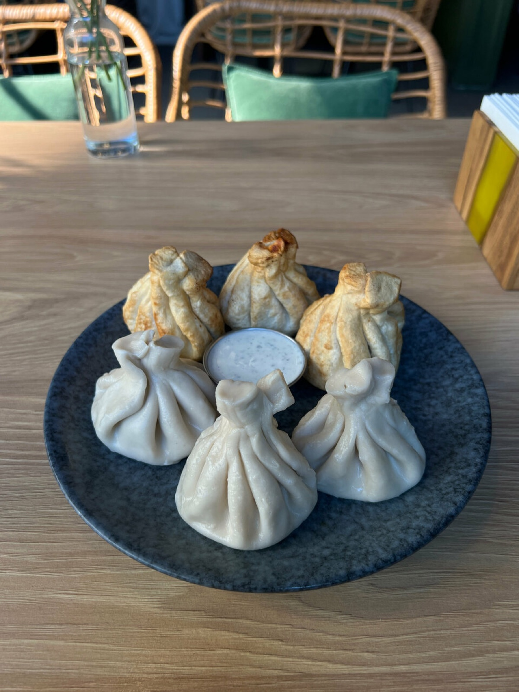
Хинкали
Лепим руками: тонкое тесто, сочная начинка и горячий бульон внутри.
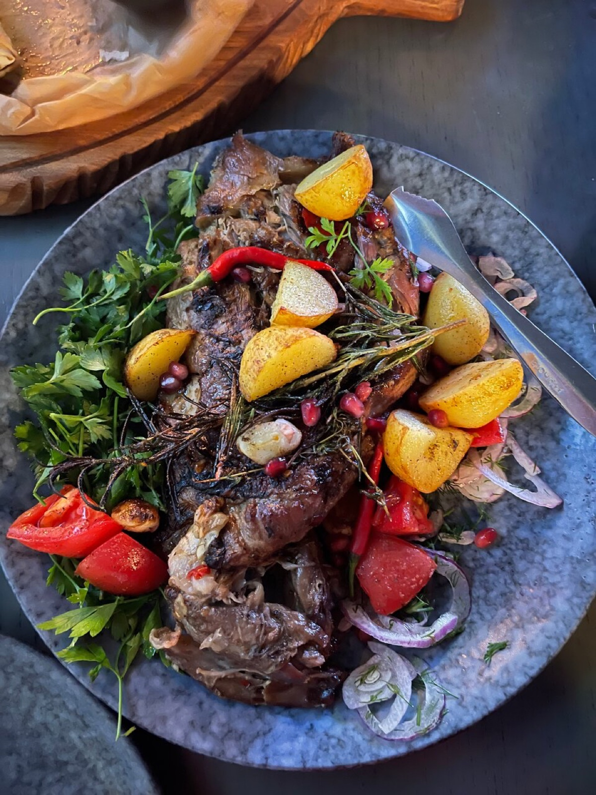
Хинкали лепим руками, мясо жарим на углях, а фирменные блюда приносим к столу с живым пламенем. Анапа, Таманская, 26В — приходите голодными.
«Кавказская кухня с армянским акцентом» — так написано у нас на вывеске. И это не слоган, а рецепт: хинкали и хачапури здесь соседствуют с толмой и кюфтой, тесто лепят руками, а мясо жарят на живом огне.

Лепим руками: тонкое тесто, сочная начинка и горячий бульон внутри.
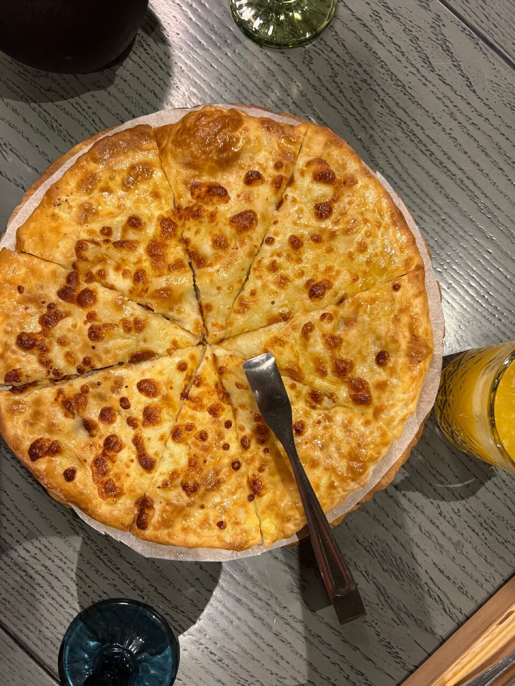
Румяная корка и тянущийся сыр — из печи прямо к столу.
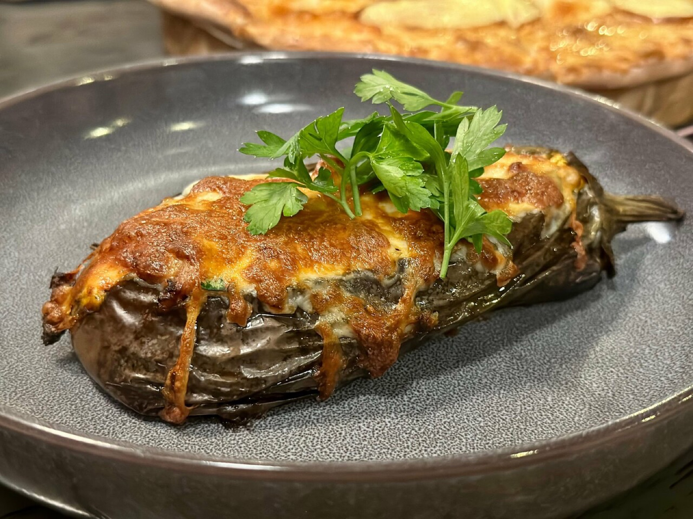
Армянская классика: заворачиваем и запекаем, как готовят дома.
Мясо на живом огне, печёные овощи и зёрна граната.
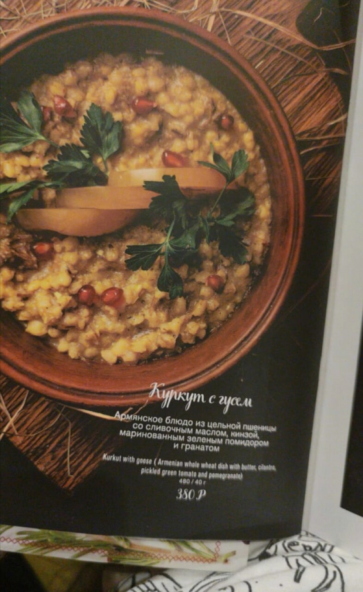
Фирменное армянское блюдо: полба томится с гусем долгие часы.
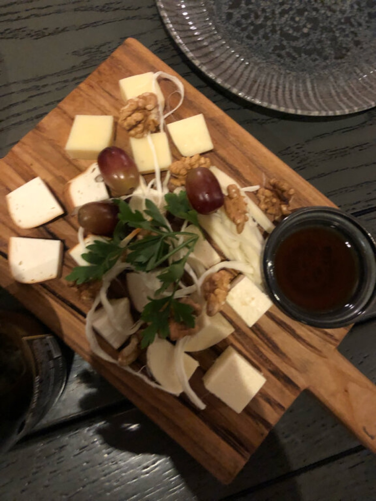
Во главе — та самая брынза, в честь которой мы названы.
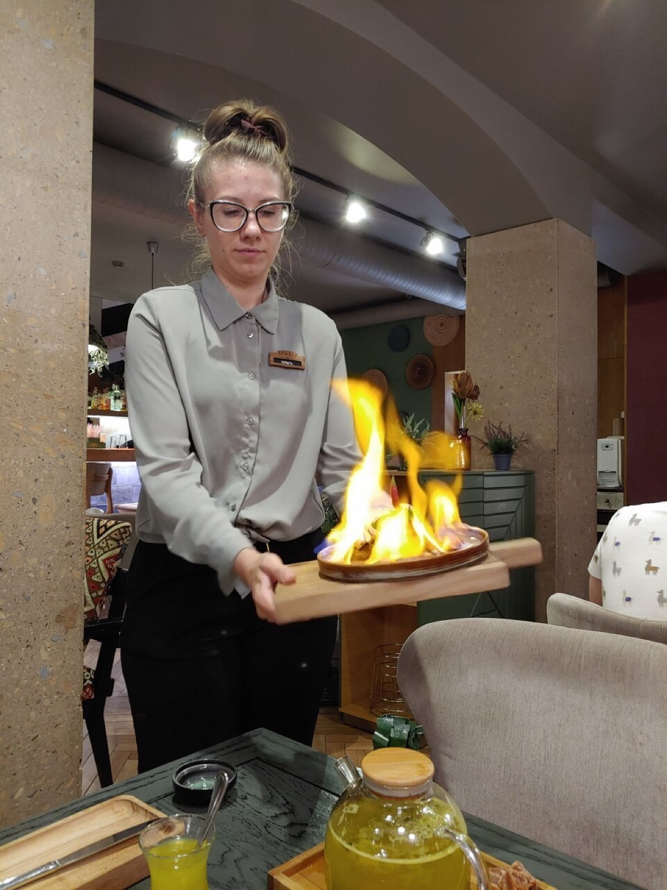
Фирменные блюда приезжают к столу горящими — официант несёт пламя через весь зал, и к нему поворачиваются все гости. Это не шоу ради шоу: огонь — то, на чём здесь держится кухня, от углей под шашлыком до латунного чайника на жаровне.
Акцент у нас не только в тарелке. В зале крутится пластинка Арама Хачатуряна, на полках — куклы в таразах, национальных армянских костюмах, а гостей встречают так, как принято в армянском доме: как родню.
Приходите всей семьёй — младшим у нас отдельное счастье: своя детская игровая комната, пока взрослые никуда не торопятся за столом.
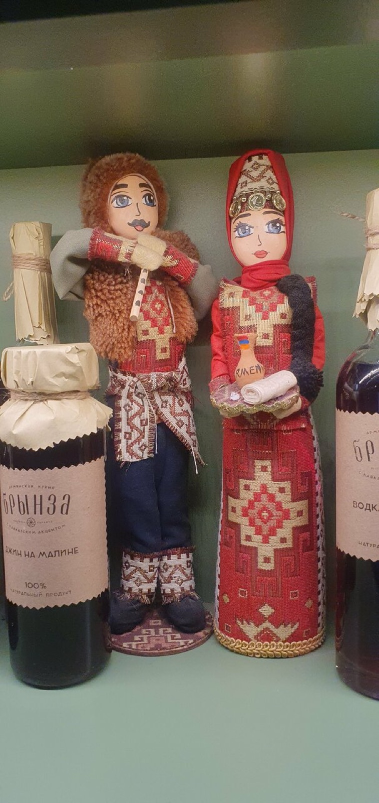
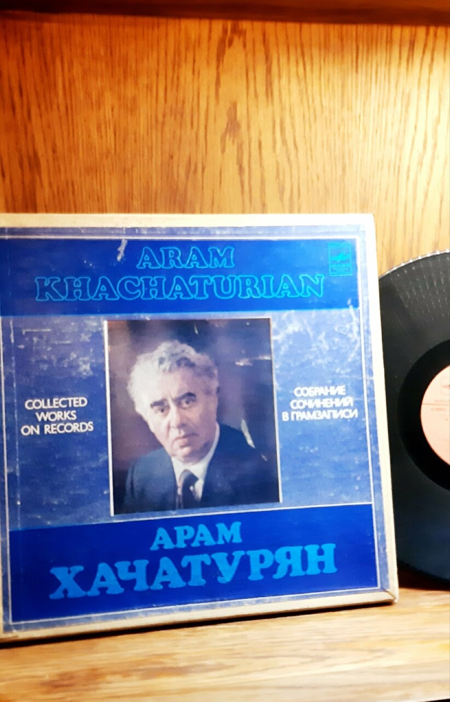
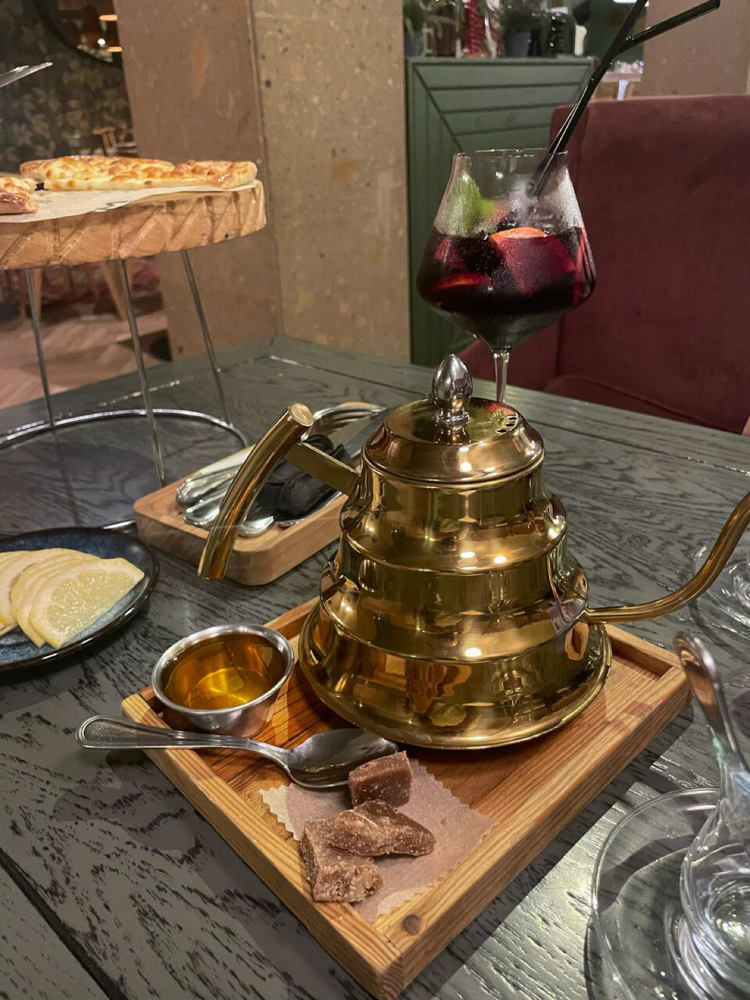
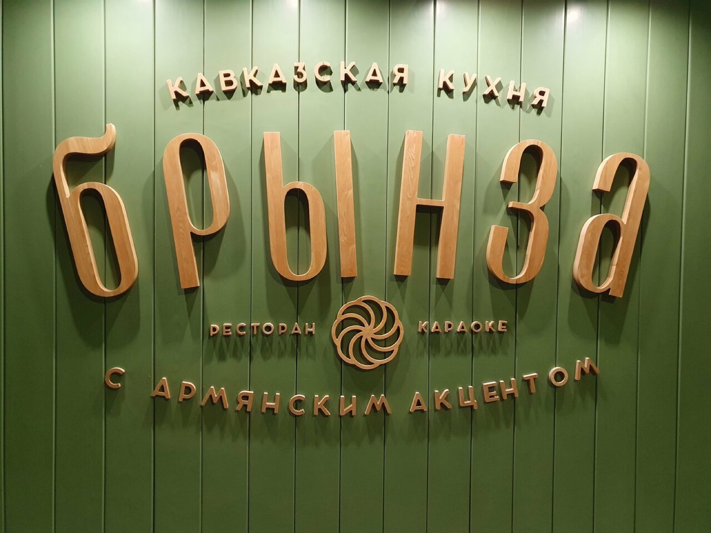
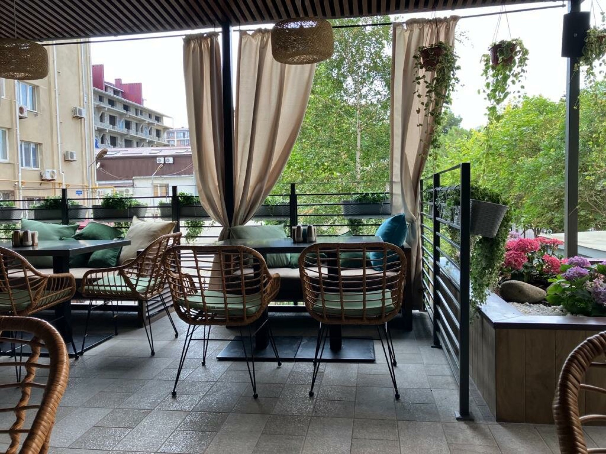
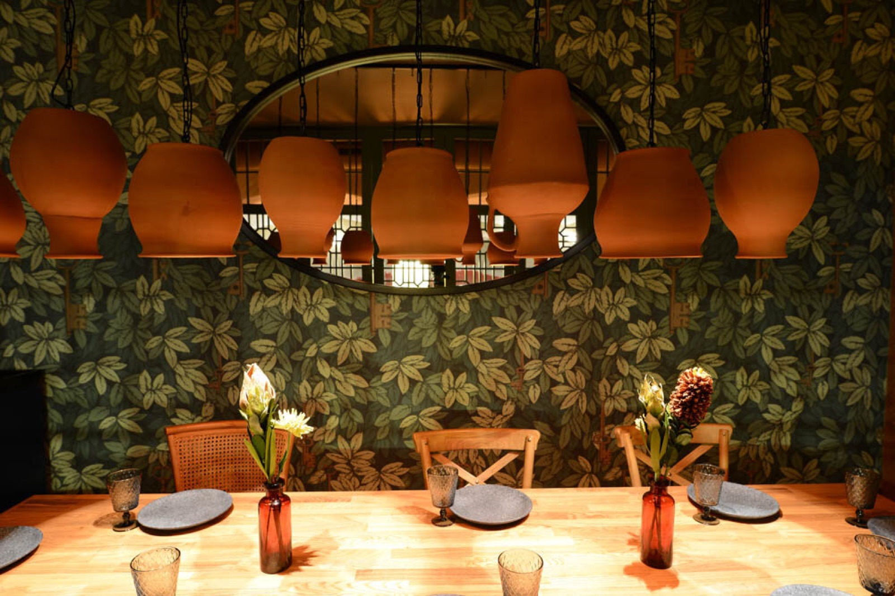
Летом — веранда с качелями и шторами, зимой — зал с медными лампами и зелёными обоями. И круглый год — запах углей от мангала.
Брынза · Таманская, 26ВБронируйте заранее: веранда с качелями и вечерние часы расходятся первыми.
Анапа, Таманская ул., 26В · показать на карте